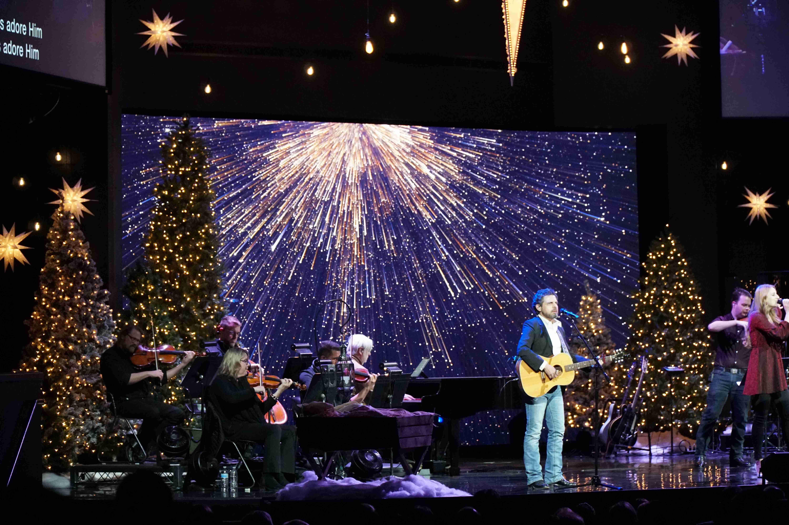
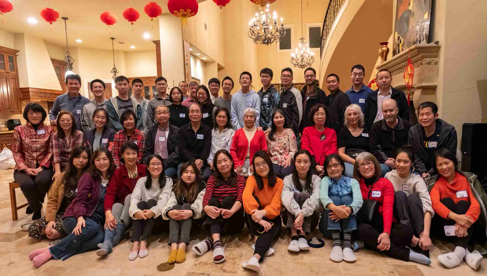
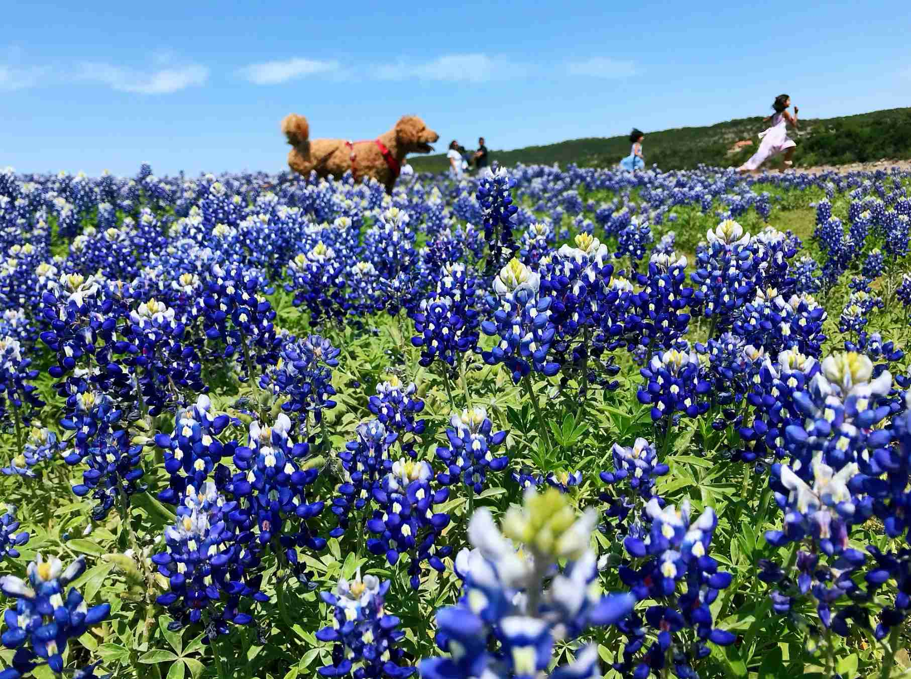

平安夜颂赞敬拜
平安夜是和家人朋友一起庆祝基督诞生的特殊时刻，对于美国的教会与家庭都有特殊的意义。
Hill Country Bible Church (HCBC) 会在每年的圣诞周举办平安夜敬拜活动，将新的音乐元素与传统的圣诞颂歌相结合，
带领大家一起赞美上帝，接受祝福。观看他们往年的平安夜敬拜请
点击链接 。
参加HCBC的平安夜聚会是我们的福音外展活动之一。特别感谢
Chris和Yvonne愿意开放他们的家，邀请大家享受圣诞聚餐，并组织报名HCBC的活动。
VIDEO
伯利恒之夜
每年的圣诞周，Burnet小镇的First Baptist Church都会举办实地场景模拟来重现两千年前的伯利恒之夜。
探索狭窄的街道，聆听古老音乐的微弱旋律，感受篝火和热面包的气味，然后让自己沉浸在市场的喧嚣中。
在那里可以看到罗马的士兵、远行来的商人、工匠小贩、税利和纳税、律法教师、甚至街边的乞丐、牧羊人、流浪汉，都活生生的出现在我们面前。
大家会一起Road Trip来组织参加这个福音外展活动，并品尝当地的美食。
VIDEO
秋季福音布道会
UTAF公寓团契所属的奥斯汀华人教会每年秋季都会举行福音布道会，邀请对基督信仰感兴趣的朋友
一起来寻求人生的意义，探索真我，认识上帝。近几年随着更多福音事工的展开，关于信仰、婚姻家庭、
职场等方面的特会也越来越多，团契会定期与大家分享。

佳节聚会
“独在异乡为异客，每逢佳节倍思亲。”新春佳节作为华人文化的特殊符号，永远在我们心中占据着重要的位置。阖家团圆一起放鞭炮，贴春联，包饺子，
看春晚，除夕守岁，拜大年，收红包等等都是带着家味的美好回忆。每到新年 ，中秋 等农历佳节，团契会举办特别聚会邀请大家
共同庆祝。以热闹的气氛、丰盛的晚餐和精彩的节目来一起度过这些特殊的日子。

看野花/远足/户外烧烤
每年春天盛开在广袤大地上的野花是德州的盛景。一条条平凡的乡间小路，一座座普通的土坡小丘，因为有了野花的出现而变得绚丽夺目，
如同一场壮观而又浓烈的春季“盛宴”。正如圣经所说，神的永能和神性是明明可知的，虽然肉眼看不见，但透过受造之物就可以领悟。
团契每年会组织大家去踏春，或是远足，或是户外烧烤。让我们一起欣赏大自然的美好，感悟神的创造之丰富与灵性，寻求一份宁静与舒缓，
让心灵被更新。
更多的小组活动
我们的团契以小组 为单位。除了团契共同的活动，每个小组也会根据自己的特色进行丰富多彩的活动。
更多郊游，远足，打球，划船，市内游，聚餐，节假日活动等着你哟。